Fate or
Failure?
China, the WHO, and the Politics of Origins
Wang Yi, China's Foreign Minister, meets WHO Director-General Tedros Adhanom — Munich Security Conference, 15 February 2020. Source: CGTN
Part 1
Introduction
January 2020
"The pressures did not need to be centrally orchestrated to be effective. They only needed to point in the same direction. And they did."
In the last days of December 2019, a cluster of unusual pneumonia cases in Wuhan set off a chain of events that would eventually kill millions and reshape geopolitics for a generation. By late January 2020, US and UK intelligence had flagged concerns about a possible laboratory origin for the Wuhan outbreak. The World Health Organization — the one international body with the mandate and in principle the standing to lead a genuine investigation into how the pandemic began — never did so.
That failure did not happen by accident — faced with the early intelligence alarm and China's determined strategy of access denial, an explicit choice was made: prioritize cooperation with Beijing over any confrontation on origins. It was a choice of convenience with consequences that outlasted the pandemic itself — an origins question left spinning in a charged geo-political landscape, and a UN health agency which has lost all credibility in its ability to conduct investigations of possibly non-natural outbreaks.
Six interlocking dynamics — Chinese access control, WHO institutional weakness, Farrar's narrative lock-in, the Global Health Security network posture, conflicted scientific networks, and a self-reinforcing echo chamber — operated in parallel to prevent any true investigation of the origin question, even before any WHO investigation team had landed in China. None of them required a central conspirator; each simply needed to point in the same direction. This article traces how they did.
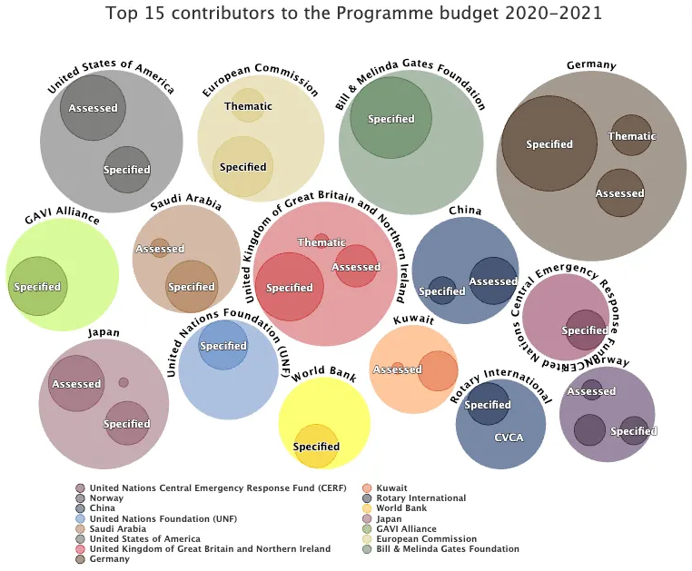
Top 15 contributors to the WHO Programme budget 2020–2021. China's contribution is notably smaller than those of the US, Germany, or the Gates Foundation. Beijing's leverage rested on access control and cultivated relationships — not funding rank.
≤10th
China's rank among WHO funders, 2020–21
Beijing wielded disproportionate leverage through access control, cultivated relationships, and economic coercion — not through financial dominance of WHO's budget.
Part 2
Between a Rock and a Hard Place
January – February 2020
The Committee emphasized that the declaration of a Public Health Emergency of International Concern should be seen in the spirit of support and appreciation for China, its people, and the actions China has taken on the front lines of this outbreak.
Tedros in Beijing: Praises as the price for declaring a PHEIC
On 28 January 2020, Tedros Adhanom Ghebreyesus, WHO Director-General, flew to Beijing to meet Xi Jinping and discuss the now inevitable declaration of a Public Health Emergency of International Concern, exactly one week after not calling one in Geneva, under pressure from China. On 30 January, at the conference call during which the WHO declared the PHEIC, Tedros heaped praise on Beijing and Xi Jinping: “The speed with which China detected the outbreak, isolated the virus, sequenced the genome and shared it with the WHO and the world are very impressive, and beyond words. So is China's commitment to transparency [..]. In many ways, China is actually setting a new standard for outbreak response, and it's not an exaggeration.”
He followed with: "The main reason for this declaration is not because of what is happening in China, but because of what is happening in other countries." That later sentence may seem particularly surprising, but contains in itself the Chinese strategy for the years to come as to any possible origin investigation by the WHO.
WHO · PHEIC Declaration Press Conference · 30 January 2020

Source: YouTube · WHO PHEIC declaration press conference, 30 January 2020
Ground Truth
The reality on the ground was rather different, and reminiscent of the cover-up that Brundtland, the WHO Director-General, had denounced with sharp words during the SARS epidemic in 2003. China's official case count was essentially frozen from 5 to 17 January — the only change was down, from 59 to 41, on 11 January, against the better advice of China's own CDC, while hospitals were facing an explosion of cases they were not allowed to officially report.
In just one Wuhan hospital, one radiologist watched CT referrals climb from single digits in early January to over 100 a day by mid-month, until the machines themselves gave out under the load: "The machine was exhausted and often crashed... and the numbers finally stopped going up." Another radiologist called a Caixin reporter in the middle of the night on 22 January: "I did about 200 CT scans in 24 hours yesterday, and there are 143 (suspected) ones." He could not help crying as he said it. At Wuhan Central Hospital, doctors outside the emergency, ICU and respiratory departments were meanwhile forbidden from wearing masks — a policy that cost the lives of four doctors in the ophthalmology department alone; one department director warned colleagues plainly: "don't fight against the leader, don't use masks, don't talk nonsense, otherwise you will be dismissed like Li Wenliang."
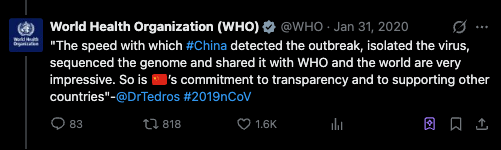
Image: Dr Tedros quoted in a WHO tweet, 31 January 2020, just after the PHEIC announcement. Source: WHO on X.
What The WHO Already Knew
But let's not believe that the WHO was not aware of some reluctance to share numbers and data. According to leaked recordings of internal WHO meetings, Dr Michael Ryan, WHO's chief of emergencies, urged colleagues in the second week of January to apply more pressure on China: "This would not happen in Congo and did not happen in Congo and other places." — the senior emergency response team was growing increasingly frustrated, when not outright baffled, by the obstructions in the sharing of sequences, isolates and epidemiological data from China.
That is just one example. Chinese authorities in fact had a complete sequence far earlier than any of this: a private lab, Vision Medicals in Shenzhen, identified the virus's high homology to SARS on 26 December 2019 and produced a full sequence the next day, immediately alerting China's CDC and the Chinese Academy of Medical Sciences in Beijing. Two weeks later, with that sequence still withheld by China, a concerted effort between Farrar, Van Kerkhove (WHO's technical lead for COVID-19), Eddie Holmes, and Zhang Yongzhen forced its release: after Chinese authorities sat on Zhang's own independently sequenced genome for weeks, Holmes and Zhang delivered a 24-hour ultimatum on 9 January, and when it passed unmet, the sequence went up unilaterally on virological.org on 11 January.
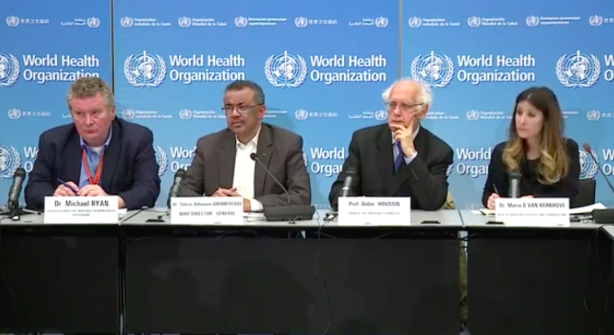
Image: Michael Ryan, Tedros, Didier Houssin, and Maria Van Kerkhove at the PHEIC press conference, 30 January 2020. Van Kerkhove, on the right, listens to Tedros praising China's transparency and "remarkable" response — having herself, days earlier, had to help force the publication of the genome and the disclosure of human-to-human transmission that China was sitting on. She would go on to head the WHO secretariat for SAGO (the Scientific Advisory Group for the Origins of Novel Pathogens), the body later tasked with investigating COVID-19's own origins. Source: WHO press conference video.
Nine days later, on 20 January, the same Farrar to WHO channel forced a second disclosure from China. Dutch zoonotic-disease adviser Thijs Kuiken, reviewing a Lancet manuscript describing clear human-to-human transmission — still officially denied by China — brought the findings to Farrar on 18 January; Farrar and Kuiken relayed them to WHO's Van Kerkhove again the next day, and Beijing conceded human-to-human transmission on 20 January.
But Dr Tedros’ exercise in front of the cameras on 30 January was not an exception — it would become the main characteristic of the WHO engagement with China, including the insistence that any problem (be it origin or containment) lay not with China but with other countries. Indeed, each concession made by the WHO — and there were many — tried to preserve some modicum of cooperation from China, by effectively sacrificing the thorny investigative dimension of the WHO engagement. It was a case of death by a thousand cuts for any scientific investigation.
The world has changed dramatically since 2003. China has become much stronger. Anyone who publicly criticizes the country, as I did then, today runs this risk that China will withdraw.
Here We Go Again
The choices that Dr Tedros made for the WHO during that period strongly contrast with those made under Brundtland, the WHO Director-General, during the SARS epidemic in 2003. Something had changed, and not for the best.
But, contrary to what Tedros was telling the cameras on that 30 January, what had changed was not the capacity or will of China to cover up some outbreak - they had only learnt how to get better at it - but the pressure China was able to exert on the WHO. This time the resulting fractures would not appear in China, but in the West.
Intelligence assessment notes, 2–3 February 2020 — released by former DNI Tulsi Gabbard. Key passage: "probably operating under WHO to not cause problems with China and limit access"
Part 3
WHO in the Deep End of the Pool
February 2020
On 1 February 2020, Jeremy Farrar, Director of the Wellcome Trust, convened a confidential call with top virologists — Holmes, Andersen, Garry, Fouchier, Koopmans — who privately acknowledged a laboratory origin could not be ruled out; Andersen himself said the virus "looked potentially engineered." A decision to try to get the WHO to onboard the origin question (the 'Tedros Proposal') was the main actionable item of that call.
That same day — during the call itself and in the follow-up that evening from Anthony Fauci, Director of NIAID (the National Institute of Allergy and Infectious Diseases) — Fauci and his HHS (Department of Health and Human Services) contacts discussed that possibility, to clear it with the US administration. Grigsby (HHS Director of Global Affairs), Kerr (HHS Director of the Office of Pandemics and Emerging Threats), and Harrison (HHS coordinator of the early COVID-19 response) were copied on Fauci's 5:58 pm EST email to Kadlec (Assistant Secretary for Preparedness and Response at HHS), while Simonson (in charge of the WHO-US Liaison Office) was looped in via Grigsby's earlier calls that same afternoon.
On that call, two experts said that the sequences were natural, the rest (number not given) said they were unsure. It was determined that a panel of experts should be convened, probably operating under WHO to not cause problems with China and limit access, to investigate further.
Francis Collins, 7:03 AM EST: “...waiting a month sounds like a really bad idea. If that's the response from WHO, then another plan will be needed. Would Wellcome be willing to be the host then [for an international origin scientific discussion]?”
Jeremy Farrar, 7:13 AM EST: “...if Wellcome – I would need 110% support from you all.....it will not be easy!”
Lawrence Tabak, 10:30 AM EST: “...given the concerns of so many people and the threat of further distortions on social media, it is essential that we move quickly. Hopefully we can get WHO to convene.”
In its defence, the WHO did not volunteer to lead an origin investigation, for which it most likely had little appetite and very little bandwidth. Nevertheless the WHO was asked to pick up that sensitive issue by Farrar and Fauci, who were working with the backing of the US administration.
That decision to offload the investigation to the WHO was certainly not taken out of confidence in its capacity to solve the question, but — and maybe generously — because it seemed to be the best of bad options. An Intelligence Community (IC) email released by former DNI (Director of National Intelligence) Tulsi Gabbard is explicit: when the scientists consulted by the National Academy of Sciences (NASEM) could not agree on the likely origins — only two calling the sequences natural, the rest unsure — the conclusion was not to press for data, but to convene a panel "operating under WHO to not cause problems with China and limit access." The formal NASEM response to OSTP, relayed subsequently to the Chinese Academy of Sciences, requested the data needed to resolve the question. It received no reply.
Unfortunately, China in 2020 was very different from the China of SARS-1 (2003): it had learned the lessons of SARS-1 in the sense that it had spent seventeen years building its diplomatic leverage with the WHO, and had generally become a much more powerful and assertive actor. Faced with this adversary, the WHO quickly found itself at the deep end of the pool.
In retrospect, the result was foreseeable: procedurally dependent on China, and without the spine it had shown under Brundtland back in 2003, the WHO basically folded as soon as the pressure mounted within mere days of it unenthusiastically agreeing to take on the origin question at the request of Collins and Farrar. China's recalibrated position toward the WHO would allow it to concede just enough access to data and to the country to prevent a complete breakdown with the WHO, while ensuring no consequential investigation ever took place.
Laid end to end, the three weeks from Tedros's Beijing visit to the quiet settlement of the February mission's terms form a single, tightening sequence.
-
28–30 Jan 2020
Tedros visits Beijing
Meets Xi Jinping. Public readout praises China's "commitment from top leadership" and "transparency" — while data was still being withheld.
-
29 Jan 2020
Classified BSEG briefing — lab origin flagged
The National Counterproliferation Center (NCPC) within ODNI (the Office of the Director of National Intelligence) convenes its Quarterly Biological Sciences Expert Group. Ralph Baric states that a laboratory escape involving a modified virus is a valid hypothesis.
-
30 Jan 2020
PHEIC declared
WHO Emergency Committee issues a statement framing the PHEIC "in the spirit of support and appreciation for China." Tedros calls China "setting a new standard" (video, 3:43).
-
1 Feb 2020
Farrar's call — both origins plausible
Jeremy Farrar, Director of the Wellcome Trust, convenes a confidential call that included the future authors of Proximal Origin (the influential paper later published as “The Proximal Origin of SARS-CoV-2,” Nature Medicine, 17 March 2020). Scientists privately acknowledge a laboratory origin cannot be ruled out; the consensus is that both natural and laboratory origin are plausible.
-
3 Feb 2020
NASEM meeting — intelligence and scientists align
National Academy of Sciences meeting attended by intelligence elements (FBI, ODNI), Ralph Baric, Peter Daszak, and Kristian Andersen. Consensus: both natural and laboratory origins remain plausible.
-
13–15 Feb 2020
February mission ToRs — last-minute, not disclosed to US
As the WHO advance team is already in China, Terms of Reference for the February mission are finalised without disclosure to the US or other member states — and only after the Proximal Origin draft has been circulated to WHO contacts and public concessions to China made: Farrar and Tedros denounce "conspiracy theories" at the Munich Security Conference on 13 February, days before the team's access terms are quietly settled.
Part 4
Farrar's Destructive Expedients
February 2020
The Burden
Unfortunately for Farrar, who was in charge of writing a non-public report with his core team of Andersen, Holmes, Rambaut and Garry, so as to anchor the offload of the origin question to the WHO, a few things quickly did not go as expected.
- First, China — which Farrar had politely informed of the offload decision, by calling his contact Chen Zhu (Chinese Minister of Health from 2007 to 2013) on 2 February — started playing hardball, as regards access to data and to the country itself.
- Second, more rumours of a possible non-natural origin simultaneously made the news.
- Last, passaging — which had not initially featured much in his core team’s thinking — became a strong option, and could not be dismissed by the more conservative group of gain-of-function (GoF) virologists Farrar had consulted (Fouchier, Koopmans, Drosten).
Garry, 6:31 PM UK: “If there is a natural explanation for CoV, it needs to be found. Some, perhaps more than a few, will not like it still since it allows that the nCoV may have arisen during cell culture passage in a lab (their labs).”
Garry, 7:14 PM UK: “Another caveat is that I think there is plenty of room for additional discussion amongst the experts. Jeremy's idea (or was it Tony's) of a face-to-face under the auspices of WHO still makes sense to me.”
Put another way, Farrar had worked his network hard to arrange for an offload of the origin question to the WHO, on the back of a private report he had been leading with the benediction of UK intelligence services, just for that offload to turn dramatically impractical in a matter of days, as the situation deteriorated on all fronts.
By 8 February, Farrar had realized that the whole 'Tedros proposal' was by now a dead weight around the WHO's neck, with Tedros struggling to get a team on the ground in China. This necessitated a complete reset of priorities, and a U-turn was thus quickly effected. If the WHO, with its back to the wall, had zero hope now of being able to address the origin question, Farrar could still turn the impasse to his advantage, and use the timely neutralisation of the origin question as a concession to China to seek some minimal but critical access.
The Expedients
And thus, in the second week of February, after aiming for a non-public exploratory report meant to anchor what Garry himself called 'a face-to-face under the auspices of WHO', Farrar instead laboured over a public communication instrument demoting any non-natural origins, with passaging surviving only in stealth mode — a minimum concession Andersen quietly worked to preserve.
we owe China a huge amount for protecting the world
On 17 February, with the WHO team just arrived in China, and still without an agreed visit agenda, Farrar — after a last-minute check with the WHO — ordered the release of Proximal Origin on virological.org, while reaching out to Nature for a quick publication there. On the same day (17 February), Farrar asked Andersen to pull it down from virological.org so it could instead be released at a press conference — almost certainly for the WHO's benefit. Andersen refused.
Where Proximal Origin worked through scientific authority, the second instrument — the Lancet Letter — was calibrated for a different audience: not the scientific community but government leaders and the public at large. It was not a scientific piece: it presented no data, no analysis, no argument that could be tested or refuted. Its authority rested entirely on the weight of the names attached to it — an appeal to authority, and to basic fears and reflexes, rather than to evidence. It also carried an implicit threat to dissenting elements — intimidation, itself a favourite tool of smear consultants in modern US politics.
Peter Daszak, president of EcoHealth Alliance, had been circulating it since early February, originally as a change.org petition. What elevated it to Lancet — instead of vegetating in a low-profile change.org petition — was a conversation with Farrar when they were on the same flight coming back from a WHO Blueprint meeting in Geneva on 12 February. Daszak subsequently asked Mike Ryan at the WHO to co-sign, and to check whether Tedros would sign as well.
Within days, Farrar had effectively organized two publications and had a heavy editorial hand in one, specifically to "put to bed the issue of the origin" and signal to China that any WHO visit would be safe. The email of 12 February, sent one hour after Farrar had landed in London, on the same flight as Daszak who was on his way back to New York via London, captures the goal verbatim. It drove the transformation of the Proximal Origin draft from a private report meant to address the origin question within the WHO arena, to a public paper that firmly asserted a natural origin, within a mere few days.
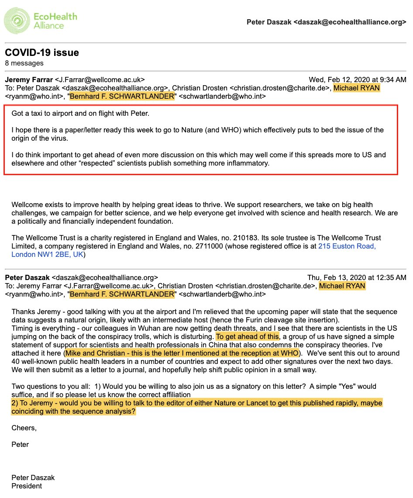
Farrar's 12 February 2020 email to Mike Ryan, Schwartländer, and Drosten — written as he flew from Geneva with Daszak. Goal: a paper to Nature to "effectively put to bed the issue of the origin of the virus."
The Denials
A false narrative has since been promoted — particularly within the NIH–biodefense apparatus — that a decisive new scientific finding — rather than external political pressure — drove the switch from private report to public paper. None of it holds. The objections raised by Fouchier, Koopmans, and Drosten to a non-natural origin were being dismantled in real time in the private exchanges of the P.O. authors, who continued to regard passaging as biologically plausible as they were writing the opposite in their draft, for public consumption.
Moreover, the immediate trigger for Farrar's definitive decision to go public was not science but a piece of news dropped in a specially convened press conference on 7 February 2020 that would quickly prove worthless: a reported 99% homology between SARS-CoV-2 and a pangolin coronavirus sequence. Andersen himself was sceptical and wanted to wait for the actual sequences to be released before committing. He was ignored; Farrar was not responding to science, he was grasping a pretext — any optically useful pretext — to come to the aid of an embattled WHO struggling to get its February mission into China, and it was Farrar who called the shots.
The bursting of the 99% claim happened on 18 February, the day after the release of P.O. on virological.org; Rambaut shared his quick analysis of the freshly released sequence with his P.O. co-authors showing instead a 90.3% full-genome homology — in effect, nothing of note. Farrar himself showed not the least interest in that news, despite having used that 99% figure to justify pushing for publication.
Even long after Proximal Origin was published in Nature Medicine, Andersen continued to harbour serious private doubts about a passaged virus — and separately about the possibility of a natural, collected virus having escaped from a laboratory, a scenario the paper had not even addressed. That the same network of researchers then spent five years producing papers that all failed to move the needle on the origin question is the clearest measure of how spurious the supposed zoonosis epiphany of February 2020 really was.
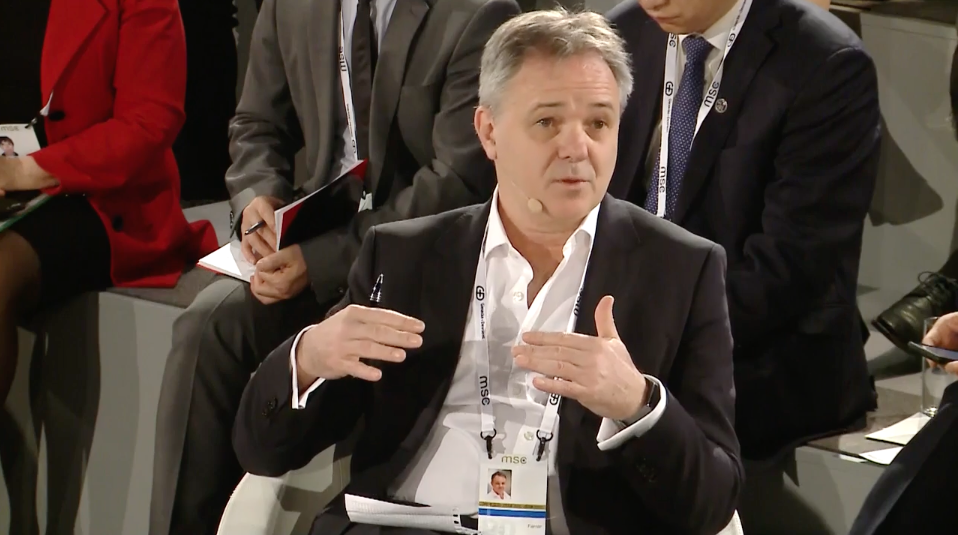
Farrar at the Munich Security Conference, 15 February 2020.
Part 5
The Bio-Defense — Global Health Security — WHO Nexus
2018 – 2026
"The scenario concludes with additional intelligence sources — including former laboratory workers — providing irrefutable evidence that the state-run laboratory in Aplea is in fact a bioweapons facility and that the spread of the deadly virus resulted from an accidental release. By the end of the exercise, the global case count is more than two billion, and more than 50 million lives have been lost."
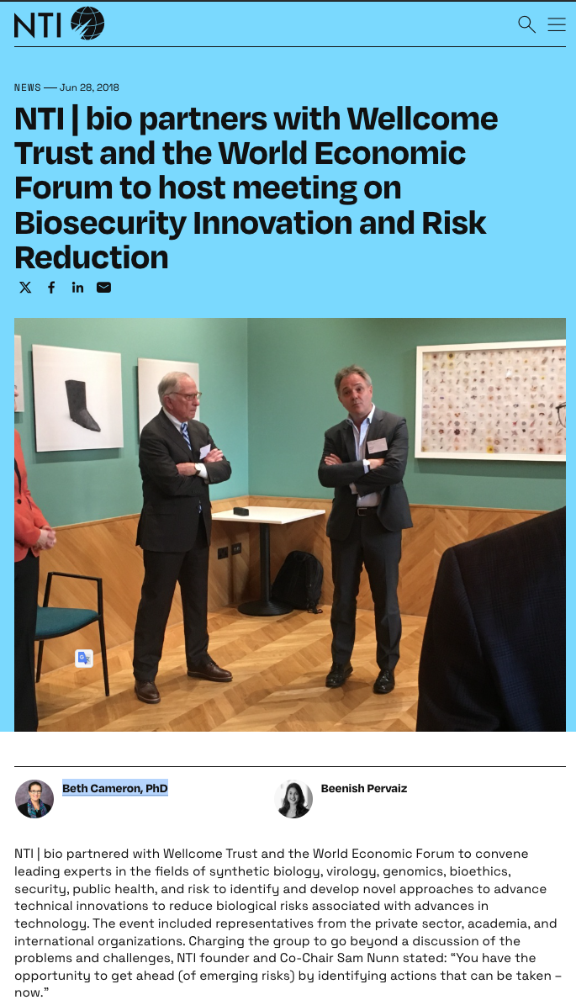
NTI–Wellcome–WEF Biosecurity Innovation meeting, June 2018.
Proximal Origin did not end its useful life as a single Nature Medicine paper in March 2020. The following year, the usual network of Biodefense & Global Health Initiatives actors pictured above — foremost Avril Haines and Beth Cameron — recycled it by using their positions inside the Biden administration to help Anthony Fauci present the paper to the Intelligence Community as settled scientific consensus. Understanding how that network operates, and its revolving doors, is essential to understanding what happened next.
NTI: The Institutional Backbone
The Nuclear Threat Initiative (NTI), co-founded by Senator Sam Nunn, the architect of the 1991 Nunn–Lugar Cooperative Threat Reduction program that secured nuclear and biological materials from the disintegrating Soviet Union, had since extended its remit and become a key part of the institutional backbone of the US Track II (unofficial, non-governmental) engagement on biosecurity and pandemic preparedness.
The 2018 photo above shows Nunn (left) with Jeremy Farrar, Director of the Wellcome Trust, acting as the relay between intelligence networks, Track II organisations such as the NTI, and international health institutions. That 2018 press release was co-authored by Beth Cameron, then NTI's Vice President for Global Biological Policy. Cameron would go on to serve as NSC (National Security Council) Senior Director for Global Health Security under Biden, personally shaping the White House's engagement with the 90-day intelligence review that DNI (Director of National Intelligence) Avril Haines oversaw. Post pandemic, in October 2024, the NTI and the Carnegie Endowment for International Peace formalised their partnership through a joint Task Force. In June 2026, Haines — who as DNI had presided over the IC origins review — was named Carnegie's eleventh president, taking office September 2026.
What these quick mentions clearly demonstrate is that the same small cast that had previously created and rehearsed scenarios on non-natural pandemics, with particular concerns about biological research in China, worked hard to ignore any potential non-natural origin of SARS-CoV-2. They also show that these actors have happily kept rotating between government, foundations and think-tanks, as if nothing ever happened — a pattern that allows for continued pressure, whoever the president is and whoever controls the House.
NTI | bio · Munich Security Conference · February 2020

Source: NTI | bio official YouTube channel · NTI–Munich Security Conference Tabletop Exercise, 14–16 February 2020
The collision between what the Biodefense & Global Health Initiatives actors had been working on, and their actual track-record during COVID, cannot be better exemplified than by the late 2019 internal tabletop exercise (TTX) that was played publicly during the Munich Security Conference of February 2020. That exercise explicitly modelled international institutions confronting an accidental engineered-pathogen release from a state denying responsibility — the precise scenario that would edge toward reality within weeks. Farrar, who attended the Munich Security Conference, spent the same week locking in the opposite response: a natural-origin narrative designed to clear the path for WHO access to China.
The 2019–20 Scenario
The exercise scenario, first rehearsed in the corridors of Washington DC in December 2019, had imagined international institutions struggling to respond to an engineered-pathogen release with a state denying responsibility.
The Reality
The actual response, when that scenario edged toward reality, was to foreclose the question before any credible investigation could begin.
From Tabletop Exercises to Bending the Biden 90-day Intel Report
The lead author of that TTX report is Beth Cameron, then NTI's Vice President for Global Biological Policy. We shall allow ourselves a little jump ahead to conclude this section, and note that by January 2021 Cameron had moved to the White House as Special Assistant to the President for Global Health Security and Biodefense on the National Security Council.
Intelligence documents released by former DNI Tulsi Gabbard show that on 4 June 2021, as NSC Senior Director for Global Health Security & Biodefense, Beth Cameron personally "mediated/facilitated" a classified Fauci briefing recapping the 4 May 2021 PDB/WIRe on COVID-19 origins — one of the key White House-facing meetings of the Biden administration's 90-day intelligence review. This puts Cameron at the centre of the review's narrative management even though she never formally joined ODNI or the National Intelligence Council.
In that capacity, Cameron helped steer Fauci into the origins process as an ostensibly independent scientific expert who just happened to be convinced by the Proximal Origin argument — the same Fauci who had co-convened the 1 February 2020 confidential call and co-drafted Proximal Origin within days of it. Fauci was thus able to use Haines’ and Cameron’s endorsements to push Proximal Origin — and its July 2021 successor, the Holmes-led "Critical Review" — directly to the Intelligence Community, presenting it as the authoritative scientific consensus on origins. The timing itself is suspicious: the manuscript had been posted to Zenodo — a platform with no moderation delay, unlike bioRxiv's typical two-day screening — just one day before Fauci's email, a release cadence that reads less like routine posting than a deadline met to order.
The irony compounds from there. Having helped shape Proximal Origin with Farrar in February 2020, then pushed it onto the Intelligence Community with Haines’ and Cameron’s help, Fauci would then be considered as an 'external' reviewer of the Biden 90-day intel assessment which he had helped shape, based on a paper (P.O.) which he had also quietly helped shape. One can't make that up.
-
4 Jun 2021
Fauci briefs the CIA on origins
At a classified briefing with the CIA's Weapons and Counterproliferation Mission Center, Fauci recommends the IC examine a two-lineage market paper by Proximal Origin co-author Robert Garry of Tulane University. Within days, the same briefing yields "a few promising POCs for [outreach] — including Andersen at Scripps," with a meeting via the Defense Technical Information Center scheduled for the following week.
-
7 Jul 2021
The "Critical Review" (Holmes et al.) lands as preprint
Holmes et al.'s "Critical Review" is posted to Zenodo. A preprint server is the usual choice when speed matters, but bioRxiv, the standard venue, runs submissions through a moderation screen that typically takes about two days before public release; Zenodo, with no such screen, is what a deadline that has to be met exactly, not approximately, calls for. The same move recurs eight months later: an overlapping cast from this network (Worobey, Andersen, Holmes, Wertheim among them) posts the two 'market' papers to Zenodo on 26 February 2022, one day after China CDC's George Gao releases his own more cautious Huanan-market analysis on Research Square, reaching different conclusions about the market's role — landing the day after Gao reads less like coincidence than a deliberate move to catch, and blunt, his limelight.
-
8 Jul 2021
Fauci forwards the "Critical Review" to the NSC the next day
Fauci forwards the "Critical Review" to Cameron, calling it the work of "a group of highly qualified virologists" that "summarizes what I said yesterday," and asks that it be routed to the NSC group, OSTP, and Jake Sullivan; Cameron replies that the NSC is "in awe" of him.
-
12 Jul 2021
Fauci recommends the Proximal Origin and "Critical Review" authors as independent experts
Fauci personally highlights the "Critical Review" preprint to the IC. The authors whose views he considered "particularly important": Edward Holmes, Kristian Andersen, and Andrew Rambaut — three of the same four scientists who had authored Proximal Origin sixteen months earlier.
-
13–14 Jul 2021
Andersen added to the SME list, over an internal objection
With "43 days before our final paper is due to the President," Andersen is confirmed on the IC's list of subject-matter experts. When someone flags the obvious conflict of interest in Fauci recommending scientists such as Andersen — co-authors of the very paper whose conclusions the assessment was meant to test — ODNI's reply is blunt: Fauci "is not a policymaker... he's a SME with a wealth of knowledge about current and historical research who probably knows better than most who the real Coronavirus experts are." Haines signs off on the resulting assessment.
-
19–20 Jul 2021
Fauci considered as one of the 90-day intel assessment's external reviewers
As the IC draws up a shortlist of outside reviewers for the draft assessment, one colleague objects: "Not Fauci; in addition to being a customer, he'll be seen by many as having a conflict of interest." Another disagrees: "the name that came up probably the most when thinking of outside reviewer was Fauci, but we're not clear on how appropriate that would be, given he's a potential customer of the paper. If he's acceptable, we'd include him."
-
3 Sep 2021
The loop closes on itself
An internal email confirms Andersen was "one of the people Fauci recommended the DNI reach out to" and was already "on the author line of multiple academic papers sourced in the origins study" — the very assessment his own recommended consultation was meant to inform.
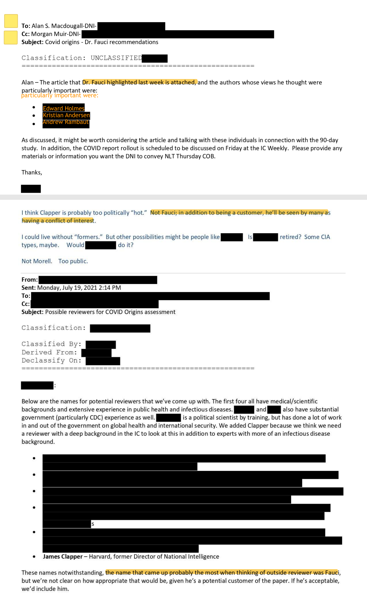
Declassified ODNI documents released by DNI Tulsi Gabbard, 18 June 2026 — the "Critical Review" author list (12 July 2021) and the reviewer-shortlist discussion naming Fauci (19–20 July 2021).
Part 6
The WHO 'Assessments': Controlled Failures
Feb 2020 – 2021
Unfortunately, this has become a political investigation. Whatever they do is symbolic.
Wang Linfa's verdict above, 2 months before the WHO 2021 mission started, was not an exaggeration, even if, for some reason, the international press still seemed to have high hopes for that coming investigation. Wang Linfa and some wiser actors had none. Indeed, as this section shall show, the writing was on the wall.
The WHA non-Resolution: Kill the Australian Chicken, Scare the European Monkeys
In April 2020, Australia had become the first country to call publicly for an independent investigation. Beijing’s response was immediate and sequential: on 11 May — eight days before the WHA vote — China suspended beef imports from four Australian abattoirs; on 18 May, the day before the vote, 80.5% tariffs on barley were announced and reported internationally on the very day of the Assembly; wine duties of up to 218% followed in November. The Chinese idiom is 杀鸡儆猴 — kill the chicken to scare the monkeys: punish one actor visibly to silence the rest.
While Beijing was pummelling Australian exports with tariffs, the Europeans took the lead in drafting a compromise, in the form of a short paragraph in the World Health Assembly Resolution 73.1. That compromise unfortunately was all about investigating the 'zoonotic origin' of the virus; the exact type of wording that can never be taken back once conceded to China. If the Europeans ever thought otherwise, they were delusional and very poorly versed in China. More likely, they knew perfectly well what they were doing.
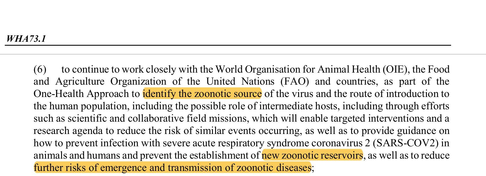
Operative paragraph (6) of WHA73.1, the resolution the European co-sponsors drafted. The word "zoonotic" appears three times — "zoonotic source," "zoonotic reservoirs," "zoonotic diseases" — the mandate never once contemplates a non-natural origin.
The Battle Around the Way the ToRs Should Be Negotiated
The resolution's language was the opening concession, not the last one. Once WHA73.1 passed, the fight moved to the negotiating table where the actual Terms of Reference for the investigation mission would be hammered out — and to whether WHO's 34-government Executive Board would have any say in that process.
Lawrence Gostin, of the O’Neill Institute for National and Global Health Law at Georgetown and an adviser to the WHO on international health law, was direct: “Consulting the board would have hugely strengthened the WHO’s hand politically.” A board consultation would have put China’s positions on the record before thirty-four governments, including the US which held a seat on the Board till 2021.
As WHO spokesman Tarik Jasarevic later confirmed to the Wall Street Journal, the organisation “normally negotiates the terms of such missions with a host government directly, without other member states” — a practice that kept every WHO member state formally prevented from knowing what the WHO had conceded, as the ToRs themselves are typically not published. This is exactly what happened earlier for the February 2020 mission, to the dismay of the US, and was bound to happen again for the 2021 mission; hence the US's logical insistence on involving the WHO Executive Board, which only made the European position not to back the US proposal more servile.
China was thus free to negotiate directly with the WHO, without any oversight. One may argue that the Europeans were trying to preserve access and cooperation with Beijing on pandemic response, a prudent judgment call rather than fear of retaliation alone. But the facts undercut that reading. Preserving future access did not require both writing China's preferred resolution wording that left no room for a non-zoonotic origin, and then blocking the Executive Board oversight of the ToRs: the two together were not a European concession, but a surrender.
And indeed, the Europeans, particularly Germany, were worried about antagonizing China. Germany’s exposure was decisive: its car manufacturers and industrial-machinery exporters were deeply reliant on the Chinese market. At the same time France had its own skeletons to keep in the closet of its decision to build the Wuhan P4, against its own and US intel services warnings. Anyway, the Europeans had drawn the lesson from Australia’s experience, and were interested in their bottom-line; better let Australia and the US pick up the fight for them instead, if they wanted to.
The ToRs Negotiation
Embarek spent four weeks horse-trading in Beijing, two in quarantine. Most of his requests to video-call Chinese counterparts during that time were denied. He eventually found out that none of the studies that the WHO had been recommended after the February 2020 mission had been pursued, and he eventually returned with some final draft of the Terms of Reference (dated 2 August) that were rather alarming.
The ToRs reproduced the Chinese government language verbatim in its preamble, mandated a “study” rather than an investigation, further framed the zoonotic origin as settled; not a hypothesis to be tested — while noting that some countries had already found undetected pre-surveillance cases and unpublished sewage-positive samples (Spain, fall 2019) which conveniently open the door to a non China-origin narrative.
“The current COVID-19 pandemic shows the devastating impact emerging zoonotic diseases can have on societies. […] WHO, the World Organization for Animal Health (OIE) and the Food and Agriculture Organization (FAO) agreed through the 73rd World Health Assembly resolution, to galvanize efforts to trace the animal origin of the virus, its route of transmission to humans and possible role of the intermediate host. […] some countries have retrospectively identified cases of COVID-19 weeks before the first case was officially notified through surveillance, and unpublished reports of positive sewage samples could suggest that the virus may have circulated undetected for some time. […] Findings from origin studies in China will advance origins tracing in other countries and may lead to similar work elsewhere.”
The ToRs further confined the international team to work that would “build on existing information and augment, rather than duplicate, ongoing or existing efforts.” This may read like some unremarkable boilerplate against wasted duplication, but its operative effect was to make it perfectly clear that the WHO team would not have access to raw data, would not be able to derive its own studies based on such data, and would have to base itself on China-supplied studies and whatever partial or aggregated data would thus be released. Which is exactly what happened, as did the programmed shift of the blame to foreign countries. Anybody who somehow harboured any hope of the contrary simply does not understand how China operates, and how each concession becomes immediately functional when China has leverage.
Embarek's own account of that trip surfaced in a leak to The Guardian. His confidential two-page travel report, dated 10 August 2020, one week after finalizing the ToRs and flying back to Europe, did not mince words about the lack of progress on the epidemiological investigation. He had hit a wall.
“Following extensive discussions with and presentation from Chinese counterparts, it appears that little had been done in terms of epidemiological investigations around Wuhan since January 2020. The data presented orally gave a few more details than what was presented at the emergency committee meetings in January 2020. No PowerPoint presentations were made and no documents were shared.”
The Forced Release of the ToRs
Exactly as with the ToRs of the February 2020 mission, the WHO then sat on the 2021 mission ToRs. They were only published three months after being finalized, following a leak to The New York Times. While their eventual publication was met by pointed criticism of their weaknesses by some, the release of the ToRs did not result in any modification. Again, what is conceded to China cannot be taken back; once the ToRs were finalized on 2 August 2020, with their debilitating wording for not only any proper origin but also any proper epidemiological investigation, there was no way back. A 'timely leak' may put a bit of pressure on the WHO, but it could not change the very weak hand the WHO had dealt to itself, as the US had feared and the Europeans had preferred to ignore.
-
Apr 2020
Australia calls for an independent investigation
Australia becomes the first country to demand a formal independent inquiry into the pandemic’s origins — triggering Beijing’s retaliation strategy against the chicken it had selected.
-
11 May 2020
First retaliation: beef suspended
China suspends beef imports from four Australian abattoirs. The first concrete trade measure, eight days before the WHA vote. Wine, barley, coal, and lobster follow progressively through 2020.
-
18–19 May 2020
European compromise at the 73rd WHA — barley tariffs land
European governments draft and broker WHA73.1: a resolution calling for a “study to identify the zoonotic source,” not an investigation. On 18 May — the day before the vote — Beijing announces 80.5% tariffs on Australian barley; the news breaks internationally on the day of the Assembly itself.
-
May–Jul 2020
European allies decline US push for executive board oversight of ToRs
The US urges WHO to bring its 34-government governing executive board into the Terms of Reference consultations. European allies — particularly Germany — refuse to join. The bilateral WHO–China negotiating track proceeds without multilateral oversight.
-
Jul–Aug 2020
ToRs negotiated bilaterally in Beijing; finalised 2 August
Peter Ben Embarek spends four weeks horse-trading with Chinese counterparts — two in quarantine, most video-call requests denied. The ToRs stamped “CHN and WHO agreed final version” on 2 August reproduce Chinese government language verbatim, mandate a “study” not an investigation, and restrict forensic review to “existing information and augment.”
-
2 Nov 2020
NYT publishes the secret ToRs
The New York Times publishes the unpublished Terms of Reference — leaked from within WHO by someone troubled by what had been agreed. WHO tells the Times it will “soon make the documents public.” Eight days later, the US publicly denounces the mission terms.
-
17 Nov 2020
WHO forced to publish the ToRs officially
Three months after finalisation — and fifteen days after the NYT article — WHO officially publishes the Terms of Reference. The mission mandate, team composition, and operating rules are already fixed. The publication is the forced formalization of an outcome decided in private.
The 2021 Mission: Failure Realised
The outcome of the 2021 mission, played in front of international cameras on a stage in Beijing, followed accordingly: the WHO certified the laboratory hypothesis "extremely unlikely" and not worth considering further, while China's frozen-import theory was elevated to a valid alternative.
As Peter Embarek's own account makes clear, this was a forced compromise — negotiated after Chinese counterparts pushed to exclude the hypothesis altogether — that still delivered Beijing exactly the outcome it wanted, twice over: first, by dispatching the non-natural origin question outright, with Embarek telling the 9 February press conference in Wuhan that the lab-leak hypothesis "is not in the hypotheses that we will suggest for future studies"; second, by swapping in the cold-chain hypothesis in its place. A complete win for China.
The cold-chain hypothesis had been carefully prepared before. It did not originate with the mission at all: it had been seeded in the Global Times by China CDC chief epidemiologist Wu Zunyou, who told the paper on 16 November 2020 that "growing evidence showed frozen seafood or meat may have introduced the virus" — a claim he and Wuhan University's Yang Zhanqiu expanded on three weeks later, while the WHO joint team was still conducting Phase 1 desktop work. By the time the full team assembled in Wuhan, that key part of the Chinese narrative was in place, and just needed acceptance by the WHO.
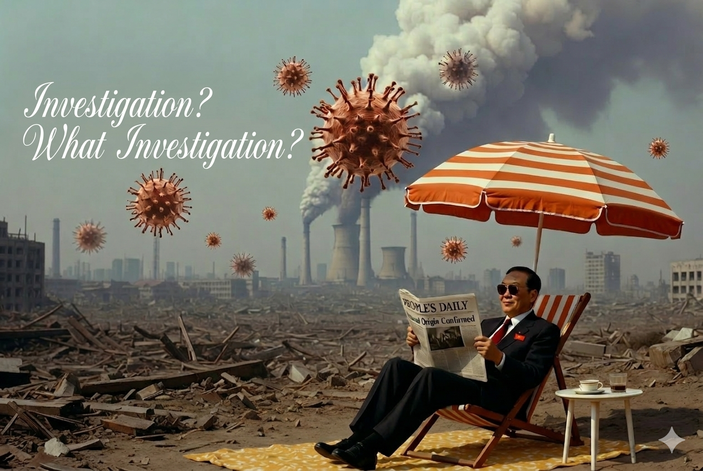
Breakfast in America, Supertramp (1979). Adapted for 2021.
Peter Embarek subsequently told Danish broadcaster TV2 that "extremely unlikely" was his own negotiated compromise wording, chosen to keep the laboratory hypothesis in the report at all after Chinese counterparts had initially wanted it excluded entirely — a detail that surfaced only after the label was already public.
"If it had been categorized differently, it would probably have required another week, perhaps some more discussion and arguments for and against, and I didn't think it was worth it. [...] If it's included, then it's something we can talk about further. If it's not included, then it's over, so for me it was most important that it was included in the report. [...] Maybe someone is not at all interested in finding out what the truth is."
The 2021 Mission: One Failure Too Many
Faced with an uproar, Tedros was pressed within three days into disowning the compromise reached by the WHO mission team, telling a WHO press briefing on 12 February that "some questions have been raised as to whether some hypotheses have been discarded" and insisting "all hypotheses remain open". One may even wonder whether his whole game had been to let Embarek concede to China, then correct course once the pressure from Washington made the concession too costly to hold. What is certain is that WHO was in no way willing to stand behind its own mission — which left it whacked left and right within three days.
“The W.H.O. prioritizes access to the country, but if you do that to the bitter end, you lose soft power.”
≤2 hrs
WIV access granted to the 2021 joint mission
A single supervised sit-down session in a meeting room — no raw data, no independent sampling, no unaccompanied questioning of personnel. But all whipped up as the real thing in an Annex to the WHO report, largely drafted by Daszak himself.
In response to the WHO's complete procedural failures, the Paris Group — an informal network of scientists and biosafety experts, formed in late 2020 — published five open letters to WHO and the World Health Assembly between March 2021 and February 2022 demanding a genuine independent inquiry, plus separate letters calling for Daszak's removal as EcoHealth Alliance president (September 2021) and for changes to SAGO's composition (October 2021) — none of which received a substantive response.
SAGO — the Scientific Advisory Group for the Origins of Novel Pathogens, the advisory body eventually convened to carry the process forward, would soon stall on identical access terms: no new WIV samples, no raw sequence data, no independent review. By March 2023 Van Kerkhove described the continued data withholding as "inexcusable." The investigation that did not happen in 2020, did not happen in 2021, and did not happen through SAGO either.
WHO–China joint study team at a Wuhan exhibition, February 2021. The visit included curated exhibitions and supervised site visits.
Part 7
A Small And Vocal Minority Of Biased Scientists
2021 – Present
The mission was over, but the defence of its compromise outcome and of the original sin behind it - the Proximal Origin convenience piece - was about to start. Such a move, despite Dr Tedros's U-turn on the origin question, was not irrational. It was well-understood career self-preservation for the authors of P.O. who had been corralled with various degrees of enthusiasm into writing a convenient health-diplomacy product by Farrar, never expecting the consequences. It was institutional self-preservation for the BioDefense apparatus which had created and funded EcoHealth Alliance, and was well anchored within the NIH where it commanded a huge budget.
Some WHO insider put it down very nicely as 'a small and vocal minority of biased scientists' in a memorable quote:
“If Sars-CoV-2 comes from an artificial consensus sequence composed of genomes with more than 95 per cent similarity to each other… I would predict that we will never find a really good match in nature and just a bunch of close matches across parts of the sequence, which so far is what we are seeing.
The problem is that those opposed to a lab leak scenario will always just say that we need to sample more, and absence of evidence isn’t evidence of absence. Scientists overall are afraid of discussing the issue of the origins due to the political situation. This leaves a small and vocal minority of biased scientists free to spread misinformation.”
The 'Dispositive' Evidence
After some set-backs in August-September 2021 (FBI and CIA coming down on the side of a research-accident, quickly followed by the DEFUSE proposal revelations and compromising FOIA'd EHA grant reports), the job to shore up the contested zoonotic certitudes narrative fell to the core P.O. authors and some associated scientists, who within a few months published a pair of 'market' papers on a preprint server in February 2022, then eventually got them published in Science in August 2022: Worobey et al. and Pekar et al. According to their co-authors, the preprints offered 'dispositive evidence' of a zoonotic jump at the market, the evidence that ends all debate. And they were played up as such in the media.
As one peer-reviewer of Worobey et al. would later reveal, the media blitz that the paper's co-authors indulged in when they were released as preprints (February 2022) was "not very scientific to be honest"; he explained that three out of four of Worobey et al. had issues with the draft, and that the paper was accepted for publication in Science, in August 2022, as one contribution subject to post-publication review, after some tuning down of the excessive claims of 'dispositive evidence' that had been pasted left and right in the media back in February.
Not very scientific to be honest!
The December 2022 email is worth dwelling on, since the reviewer was making, in private and over a year ahead of time, the exact methodological point the Journal of the Royal Statistical Society would only put into print in 2024: that Worobey et al.'s data could not distinguish the market being the source of the outbreak from the market simply being a superspreader location once infected people were already circulating through it.
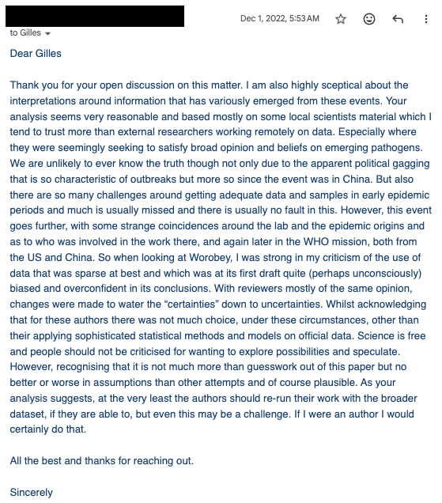
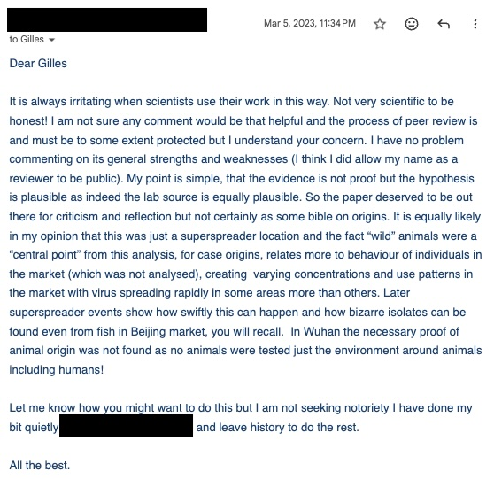
Peer reviewer correspondence on Worobey et al. (2022), identity redacted — 1 December 2022 (left) and 5 March 2023 (right).
This was enforcement from inside the guild: scientists policing scientists, litigated through journals, peer review, and professional reputation, run by a Track II network protecting the operating model it depended on. It ran in parallel with, and was reinforced by, a second enforcement track operating at an entirely different scale — state and platform power, activated within days of the pandemic's declaration and rehearsed months before the outbreak even began. That is where Part 8 turns next.
The conscious and intelligent manipulation of the organized habits and opinions of the masses is an important element in democratic society.
But just as they had run away with claims of 'dispositive evidence' in February, the co-authors would repeat - in August - that their work closed the case once and for all. From the victory laps of the co-authors in the media, one would never have guessed that this peer-reviewer considered a laboratory accident as plausible as a natural origin, or that the reviewers had asked for a watering-down of the 'dispositive' claims. But so goes science by headlines: not much about science at work, more about locking a narrative.
Possibly the most pointed verdict about the value of the Science market papers came actually from inside the 'Coalition of Support', a group of scientists working alongside Daszak, and with the help of some PR firm, to protect EcoHealth Alliance from defunding. In an internal email dated 3 August 2022 — copied to Daszak, Hotez, Chmura, and Sturchio — Gerald Keusch (all part of the Coalition) reported back on a call with W. Ian Lipkin and the latter's unvarnished judgment on the two Science papers: "crap epidemiology." The dismissal carries particular weight because Lipkin was himself a co-author of Proximal Origin, the convenience paper that had done more than any other to foreclose the laboratory hypothesis in public.
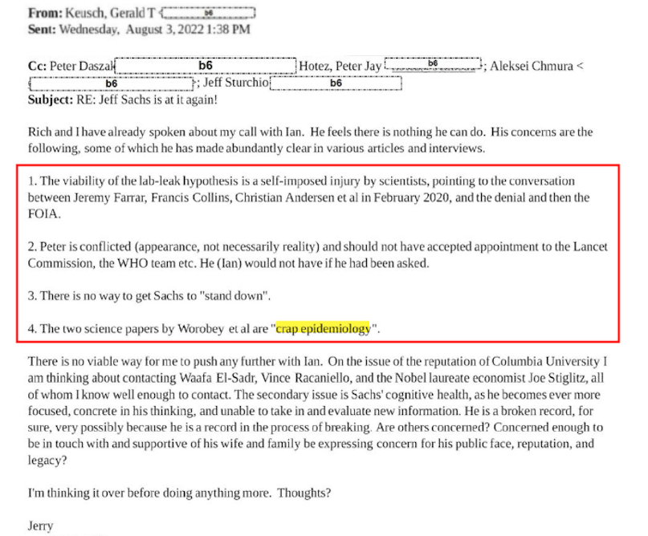
Gerald Keusch to Peter Daszak, Peter Hotez, Aleksei Chmura, and Jeff Sturchio, 3 August 2022.
Lipkin's private dismissal to Keusch was not a one-off: eight months later, in a sworn transcribed interview with the House Select Subcommittee on the Coronavirus Pandemic on 6 April 2023, Lipkin gave the same verdict on the record — this time specifically about Worobey et al. — and disclosed the professional cost of saying so.
“I don’t think that I can conclude based on this paper that the origin is the seafood market. The only thing that I conclude from that paper is that it was a site for amplification. That doesn’t mean that it wasn’t the site. It just means that I don’t find it, you know, what we call dispositive evidence.”
“Our colleagues fuelled this with armchair epidemiology based on unverifiable data sets and terms like ‘dispositive evidence.’”
“Dr. Holmes became very unhappy with me after I refused to sign on and say that, you know, there was proof that this is where this began, in the wet market. And so we have no further — we’ve had no further contact.”
Asked whether the falling-out explained his absence from the papers that followed, Lipkin — invited only to speculate — answered: "probably so." He remains, as the table below shows, the only one of the five Proximal Origin authors never to appear on Worobey et al., Pekar et al., or the "Critical Review."
Filling The Zone
Even if the point of the Science papers, and the way they were enthroned, was to fill the zone with the desired narrative, and to make the cost of dissidence very clear, it could only work for a while. Eventually, post-publication review kicked in, with its corrections and critical peer-reviewed re-evaluations, exposing the serious weaknesses in their methodologies and conclusions.
Stepping back a bit, none of this should be surprising. For instance, in what will - no doubt - in a few more years be recognised as the height of absurdity, Worobey et al. was based not on any granular data, but on badly extracted points from rather sketchy maps of the official early cases in Wuhan that were extracted from the WHO report. These were mere pixels on distorted low-resolution outlines of the city districts - crumbs of official data - compounded by basic geo-extraction errors. And these were only a part of the whole picture, with no proper unbiasing for initial reporting criteria (despite superficial assurances to the contrary by the authors) and clear 'subtraction' of otherwise reported laboratory confirmed unique cases.
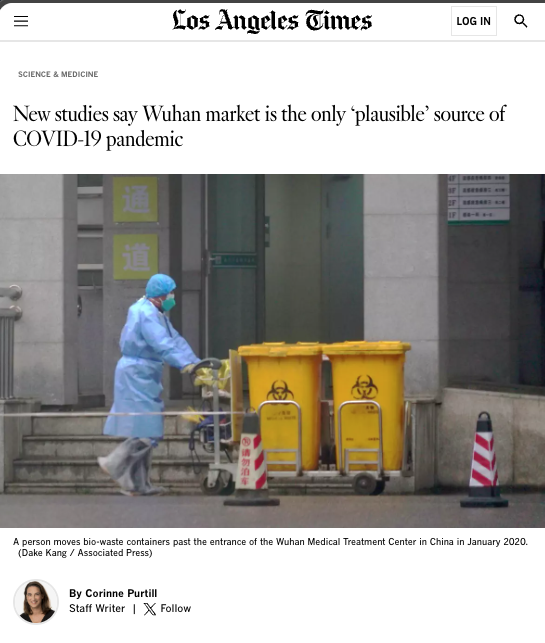
Los Angeles Times headline, 2022 — the media amplification moment that treated the papers as a definitive verdict.
Even if taking its data at face value, a formal peer-reviewed critique in the Journal of the Royal Statistical Society demonstrated Worobey et al. had used tests inappropriate for the data structure. Separately, Pekar et al. required a significant Science correction in October 2023, after DRASTIC pointed out multiple issues. That was followed by some 2025 reanalysis by Weissman and by Nod, which eventually showed the conclusions of Pekar et al. “dissolve entirely” and actually reverse when analytical errors are corrected.
-
Mar 2021
WHO–China joint mission report published
Laboratory hypothesis rated "extremely unlikely." The press conference is managed by Daszak, who speaks as de-facto Western lead despite being a named conflicted party.
-
Aug 2022
Worobey & Pekar papers in Science
Published simultaneously as complementary market-zoonosis cases. Media coverage presents the conclusion as settled. Peer-review correspondence tells a different story.
-
Oct 2023
Pekar et al. corrected in Science
Headline conclusions revised following a formal statistical critique in the Journal of the Royal Statistical Society.
-
Oct 2024
Peer reviewer correspondence published
Peer reviewer correspondence (2022–2024) released: "Not very scientific to be honest!" The reviewer notes that both natural origin and research accident are “equally plausible”.
-
2025
Weissman reanalysis
Full reanalysis shows Pekar et al. conclusions "dissolve entirely" when analytical errors are corrected.
The confidence projected in public bore little resemblance to what the private peer review exchanges showed. Worobey told NPR that the odds of the case-distribution pattern were "1 in 10 million" if the market was not the source — a statistical artefact of model assumptions applied to incomplete, politically curated data, repeated across outlets as though it were an empirical finding. In October 2024 — a year after the Pekar correction — Andersen was in Oslo promoting the same paper conclusions to the Norwegian Society for Immunology without any qualification, and with derogatory terms for any critic.
The Science papers' authors did not lack any chutzpah, but - if any defense can be found - some were essentially opportunistically surfing a narrative that was eager for such material, irrespective of quality, while others were trying to defend their disputed conclusions in Proximal Origin; four of the five Proximal Origin authors — Andersen, Rambaut, Holmes, and Garry — are also co-authors of both 2022 Science papers. Effectively, the same core group that had declared a laboratory origin implausible in March 2020 tried to summon up the "independent" epidemiological and molecular confirmation that closed the question two years later.
A broader network then sprang into action to vehemently enforce the natural-origin conclusion. Chief among them was Angela Rasmussen, a co-author of Worobey et al., but also the designated 'bull-dog' in EcoHealth Alliance's "Coalition of Support" — the internal PR and lobbying network Daszak was assembling in 2021, initially around Peter Hotez, Gerald Keusch, and Rich Roberts, to counter what internal notes called "political interference" against EcoHealth.
Silencing Sachs
As one of many examples of the Coalition members at work, one may consider Keusch's email above from August 2022, precisely one week after the publication of the market papers in Science. In that email, Keusch explains that he was firmly rebutted by Lipkin when asking him how one could remove Jeffrey Sachs (Columbia University) from the leadership of the Lancet COVID-19 commission, and then went on wondering if he and his 'Coalition of Support' accomplices may still spin a story that Sachs was suffering from early dementia.
“The secondary issue is Sachs’ cognitive health, as he becomes ever more focused, concrete in his thinking, and unable to take in and evaluate new information. He is a broken record, for sure, very possibly because he is a record in the process of breaking.”
For context, Sachs had recently (June 2021) asked Daszak to step down as chair of the origin task force under that commission (while remaining a member of the task force), for lack of transparency, while Keusch himself stepped up to be chair of the task force. Ironically, that email from Keusch - by then in his role as chair of the Lancet origins commission task force - perfectly justifies Sachs's decision to dissolve the full task force not long after, as being irredeemably compromised, if need ever was.
And thus it went on, with the 'Coalition of Support' diligently doing its work at key junctures. Angela Rasmussen played the role of the Coalition 'bull-dog'; as co-author on one of the papers she was on hand for media quotes and active as an influencer on Twitter. Peter Hotez, another 'influencer' who cultivates the image of a cultured honest scientist, was another Coalition asset and busy defending EcoHealth and the shallow zoonotic certitudes for years.
Event 201 pandemic tabletop exercise, Segment 4 — George Fu Gao (Director-General, China CDC) and Avril Haines (former CIA Deputy Director, future DNI), New York, 18 October 2019
Part 8
WHO as Censor: The Infodemic Apparatus
February 2020 – May 2021
If Part 7 showed the scientific network defending its own verdict from within the literature, this chapter turns to the institutional and platform-level apparatus that defended the same verdict from outside it, not through peer review, but through platform policy negotiated directly between WHO leadership and Silicon Valley.
The Menlo Park Deal: Building the Apparatus
On 13 February 2020 — two days before Tedros denounced a supposed "infodemic" at the Munich Security Conference, and while the WHO was struggling to secure any access for its February 2020 mission in China — WHO's digital outreach team was already at Facebook’s Menlo Park campus, finalising content agreements with Amazon, Google, Twitter, YouTube, and ten other platforms.
The stated purpose was limiting harmful misinformation during a live public-health emergency — a defensible general policy that, applied here, conveniently suppressed a still-live scientific hypothesis rather than a settled falsehood. The result was to treat a live scientific hypothesis as settled misinformation: Facebook removed posts discussing a likely laboratory origin throughout 2020 and into 2021, and YouTube followed the same guidance.
“Following weekly calls between WHO and YouTube, the video platform has banned any COVID-19-related content that contradicts WHO advice; as pointed out by YouTube CEO Susan Wojcicki, anything against WHO recommendations is ‘a violation of our policy’. These policy updates led to the removal of more than half a million YouTube videos between February 2020 and January 2021. In order to potentiate the efforts of misinformation vigilance on YouTube and Facebook, these platforms have granted WHO access to a fast-track reporting system, which allows WHO staff to flag misinformation, leading to a quick removal of contents that break their policies.”Germani, Pattison, Reinfelde — BMJ Global Health 2022;7:e009483
To amplify the reach, WHO secured a $250 million pro bono ad grant from Google — negotiated directly by Tedros with Google CEO Sundar Pichai in March 2020, and roughly twice China’s total contribution to WHO that year. By July 2021 those targeted ad campaigns had driven 167 million visitors to the WHO website. Some of this was for good reasons, such as when people searched for absurd remedies, but it also included people who were merely looking for information about the lab-origin hypothesis.
15 months
Duration of platform suppression of the lab-origin hypothesis
Feb 2020 to May 2021 — during which WHO-aligned platform policy actively suppressed a hypothesis treated as credible by the FBI and DoE (Department of Energy).
That fast and determined response was not improvised: the WHO–platform coordination that WHO communications official Andrew Pattison arranged in February 2020 on a visit to Silicon Valley had been rehearsed a bit earlier at Event 201 — a pandemic tabletop exercise run in October 2019 by the Johns Hopkins Center for Health Security, the World Economic Forum, and the Bill & Melinda Gates Foundation.
Event 201 was the culmination of a sequence of exercises that had progressively sharpened the pandemic communication strategy in coordination with the tech giants: Clade X (Johns Hopkins, May 2018) and Crimson Contagion (HHS, August 2019) had each identified an information-management gap without prescribing a mechanism to fill it, while Event 201 was the first one to play-act the solution: coordinated, real-time suppression through direct partnerships between media platforms, the WHO and affected governments.
Johns Hopkins Center for Health Security · World Economic Forum · Bill & Melinda Gates Foundation
Event 201 was no arm’s-length academic exercise: the Johns Hopkins Center for Health Security functions as one of the principal career bridges between the US biodefense establishment and global health governance, and the Center’s own Emerging Leaders in Biosecurity Initiative (ELBI) fellowship formalises the pipeline.
Beth Cameron mentored ELBI’s 2017 cohort, the very cohort that Adrienne Keen — then a State Department health advisor — attended as a fellow. Three years later, Cameron was at the Biden NSC and Keen was directing the Global Health Security desk at the NIC (National Intelligence Council). By her own LinkedIn account, she went on to lead “first National Intelligence Estimate on COVID-19, coordinating expert input, managing drafters, and building consensus across 17 agencies to publish on behalf of the Director of National Intelligence.” Set against the record below, “building consensus” is a generous description of what reads more like narrative management on Haines’s behalf.
Adrienne Keen was also a Consultant to the WHO’s Global Tuberculosis Programme from May 2016 to December 2019, which raised some concerns about her objectivity in the COVID-19 origin intel effort she was managing.
“I had found out that apparently she was an outside adviser also to the World Health Organisation, they are a political agency. They’re a UN agency. So it’s just not appropriate to do work for a foreign power. And that would include the United Nations.”
The exercise itself was co-hosted by the World Economic Forum and the Bill & Melinda Gates Foundation — a vivid example of the Global Health Security / Biodefense arc running through Johns Hopkins, NTI, Wellcome Trust, WHO and Intelligence agencies.

Source: JHCHS official YouTube channel · Johns Hopkins Center for Health Security, 18 October 2019
The “Communications Discussion” was a key part of the October 2019 tabletop exercise (TTX): participants explicitly modelled coordinated social media account deletion as a standard pandemic misinformation-management response. Among the fifteen players was Avril Haines — formerly CIA Deputy Director under Obama, and future Director of National Intelligence in charge of the origins ‘investigation’ under President Biden.
The October 2019 Script of Event 201
Penalties have been put in place for the spreading of harmful falsehoods, including arrests. Other countries have taken a more moderate approach and have focused on promoting fact-checking efforts and working with traditional media outlets, yet these approaches are limited in scope. Social media companies report they’re doing all they can to limit the use of their platforms for nefarious or misleading purposes.
source: Event 201, Segment 4, October 2019
The 2020 Implementation
China arrests people for telling the truth. The Biodefense–NTI–Wellcome–WHO nexus demands and obtains from traditional and social media that they censor non-natural origin discussions.
A playbook that was 4 years in the making
None of this began with COVID-19 — what changed between 2016 and 2020 was not the underlying sociological argument but its industrial scale: funded operations, platform cooperation, and rehearsed government-technology playbooks turned a nephew-of-Freud's theory of engineered consent into routine operating procedure. The most funded, coordinated digital rapid-response operation of the 2016 US campaign belonged to David Brock's Correct the Record, whose $1 million "Barrier Breakers" unit worked Twitter, Facebook and Reddit on Clinton's behalf months before "fake news" and Russian interference became the dominant explanation for Hillary Clinton's defeat.
Obama privately warned Zuckerberg that November that Facebook had to do more. The same frame hardened into a running character claim: Clinton called Trump Putin's "puppet" from the debate stage in 2016 and was still running the line in February 2020, tweeting that "Putin's Puppet is at it again... he knows he can't win without it" as fresh Russia-interference reports surfaced ahead of that year's election.
By then Google and Facebook were already inside the exact platform-government coordination playbook that Event 201 had rehearsed as pandemic doctrine in October 2019 — the same two companies WHO would activate four months later, against a virus instead of an election.
Bernays' 1928 call, quoted in Part 7, for the "conscious and intelligent manipulation of the organized habits and opinions of the masses," has found many adherents since 1928, but seems to have moved from the shadows to become a mainstream and open political credo sometime in 2016.
The kowtow: conditional access for foreigners, inseparable from acknowledgment of sovereign hierarchy. In 2020, the mechanism was updated — no ritual prostration, but public encomiums, emasculated ToRs, and narrative concessions.
Part 9
Conclusion
After an initial success, the attempt to project and protect a convenient narrative ended up damaging the institutions of the narrators, starting with the WHO itself. This was not preordained: 17 years before the COVID-19 pandemic, the WHO had shown real resolution, but 2020 was not 2003, and key elements - many linked to the ascendency of China on the international scene, and its playing by its own rules - conspired to sap the WHO, so that its investigative resolution translated this time into a Potemkin-level effort to please in the face of an adverse reality.
China's ascendency may seem surprisingly effective given that it was a rather secondary contributor to the WHO budget - but it is perfectly representative of China's preference for well-applied leverage, preferably in unilateral settings, and the exploitation of the West's own fracture points - which in deliquescent political (US) and economic (Europe) contexts were many. And so, in the end, even if China had a major lock on the WHO, it is largely Western actors, from Bernhard Schwartländer to Fauci, Farrar, Haines, Cameron, and a group of 'vocal scientists' relayed by obliging ideological media, who must collect the prize for one of the worst scientific failures in human history.
Six Interlocking Dynamics
Chinese Access Control
Beijing rationed even minimal access as a high-value concession, conditioning cooperation with the WHO on public deference, emasculated Terms of Reference, curated site visits, and narrative concessions.
WHO Institutional Weakness
Procedural dependency on host-state consent, a culture of consensus over confrontation, and leadership that had internalised Beijing's preferences as its own, despite a Chinese contribution to the WHO budget less than Saudi Arabia's in total dollar amount.
Farrar's Narrative Lock-in
Pre-emptive publication of Proximal Origin and the Lancet Letter before any investigation had occurred — designed to signal to China that a WHO mission would be safe to host.
The Global Health Security Network Posture
A pre-existing biosecurity architecture — Johns Hopkins Center for Health Security, NTI, Wellcome Trust, WEF — shared leadership with WHO advisory boards, Intelligence Community figures, and the Munich Security Conference circuit, and had rehearsed censorship and counter-narrative responses four months earlier at Event 201.
Conflicted Scientific Networks
NIAID funding, EcoHealth Alliance grants, and gain-of-function research programmes tied key scientific actors to the natural-origin narrative and gave them institutional reasons to reinforce it.
Self-Reinforcing Echo Chamber
When the outbreak hit, the network did not conduct a fresh inquiry: it executed the automatisms rehearsed at Event 201 — platform suppression, friendly press amplification, and a stream of low-quality publications that cited each other — raising the reputational cost of dissent while insulating the consensus from scrutiny.